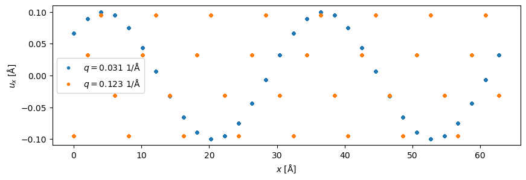
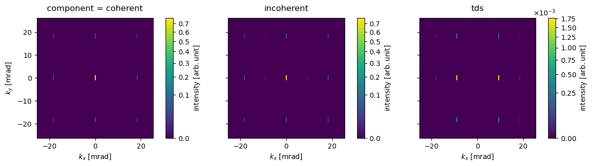
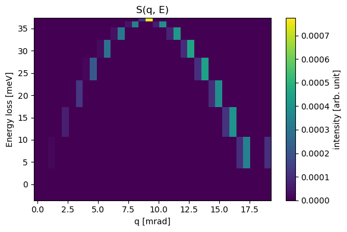
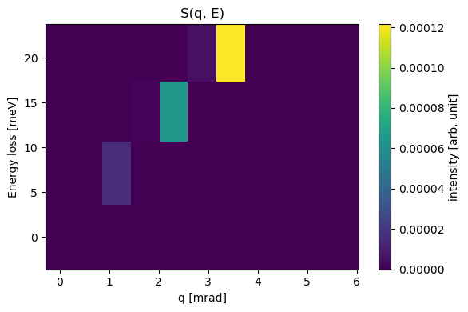
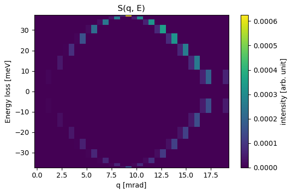
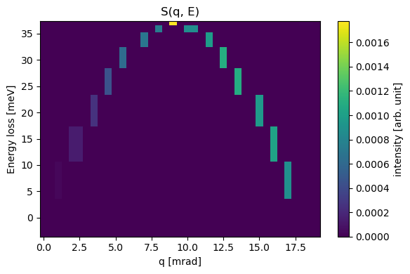

import warnings
import ase
import matplotlib.pyplot as plt
import numpy as np
import abtem
abtem.config.set({"diagnostics.progress_bar": False})
# the frozen-phonon configurations are deliberately kept unaveraged below
warnings.filterwarnings("ignore", message="ensemble_mean=False");
Phonon-loss spectroscopy#
In a standard frozen-phonon simulation, a set of configurations sampling the thermal displacements is averaged incoherently. The diffuse part of that average — the difference between the incoherent and the coherent sum — is the thermal diffuse scattering (TDS), and it lumps together every phonon the electron could have excited, at every energy.
Since version 1.1.0, abTEM can resolve that signal in energy. Instead of a single set of configurations, an EnergyResolvedAtomsEnsemble holds one group of configurations per energy bin, so the TDS decomposition can be applied bin by bin. The result is a set of energy-resolved diffraction patterns, from which momentum_resolved_spectrum builds the momentum-resolved spectrum \(S(q, E)\) measured in vibrational EELS.
The energy resolution comes entirely from how the configurations are made: abTEM does not calculate the phonons. The displacement patterns and the energy assigned to each group come from an external lattice-dynamics or molecular-dynamics calculation — or, as below, from a model.
A model phonon#
We use aluminium in the \(\left<100\right>\) zone axis and populate one longitudinal acoustic mode at a time. A mode with scattering vector \(q\) along \(x\) displaces the atoms as
\(u_x(x) = A \cos(2 \pi q x + \phi) \quad ,\)
where the phase \(\phi\) is what we sample: the frozen-phonon configurations of an energy bin are snapshots of the same standing mode taken at random phases. Only wavelengths commensurate with the supercell are allowed, so \(q = m / L\) for integer \(m\), where \(L\) is the length of the supercell.
We assign an energy to each mode with the dispersion of a monatomic chain,
\(E(q) = E_{\mathrm{max}} \left| \sin(\pi q d) \right| \quad ,\)
with \(d = a / 2\) the spacing of the \(\{200\}\) planes and \(E_{\mathrm{max}} = 37 \ \mathrm{meV}\) at the zone boundary. Every mode is given the same amplitude, so the intensities below carry no physical meaning — only the positions of the peaks do. A realistic calculation would take both the displacement patterns and their amplitudes from lattice dynamics.
a = 4.05
num_cells = 16
crystal = ase.build.bulk("Al", cubic=True, a=a) * (num_cells, 4, 10)
L = num_cells * a # length of the supercell along x
d = a / 2 # spacing of the {200} planes
maximum_energy = 0.037 # eV, at the zone boundary
orders = np.arange(2, 18, 2)
q_values = orders / L # 1/Å
energies = maximum_energy * np.sin(np.pi * q_values * d) # eV
for q, energy in zip(q_values, energies):
print(f"q = {q:.4f} 1/Å, E = {energy * 1e3:5.1f} meV")
q = 0.0309 1/Å, E = 7.2 meV
q = 0.0617 1/Å, E = 14.2 meV
q = 0.0926 1/Å, E = 20.6 meV
q = 0.1235 1/Å, E = 26.2 meV
q = 0.1543 1/Å, E = 30.8 meV
q = 0.1852 1/Å, E = 34.2 meV
q = 0.2160 1/Å, E = 36.3 meV
q = 0.2469 1/Å, E = 37.0 meV
The configurations of one energy bin are snapshots of the same mode at sixteen random phases. We add a zero-energy bin holding copies of the undisplaced crystal — a bin with no phonon, which is required by the thermal weighting further below and which serves as a useful check: its diffuse intensity must vanish exactly.
amplitude = 0.1 # Å
num_configs = 16
rng = np.random.default_rng(13)
def displace(atoms, q, phase):
displaced = atoms.copy()
x = displaced.positions[:, 0]
displaced.positions[:, 0] += amplitude * np.cos(2 * np.pi * q * x + phase)
return displaced
snapshots = [[crystal.copy() for _ in range(num_configs)]]
for q in q_values:
phases = rng.uniform(0, 2 * np.pi, num_configs)
snapshots.append([displace(crystal, q, phase) for phase in phases])
all_energies = np.concatenate([[0.0], energies])
Each configuration is the perfect crystal with a single sinusoidal displacement wave frozen into it.
fig, ax = plt.subplots(figsize=(10, 3))
for i in (0, 3):
displacement = snapshots[i + 1][0].positions[:, 0] - crystal.positions[:, 0]
ax.plot(
crystal.positions[:, 0],
displacement,
".",
label=f"$q = {q_values[i]:.3f}$ 1/Å",
)
ax.set_xlabel("$x$ [Å]")
ax.set_ylabel("$u_x$ [Å]")
ax.legend();

The energy-resolved ensemble#
EnergyResolvedAtomsEnsemble wraps the snapshots together with the energy of each group. We set ensemble_mean=False, since the TDS decomposition needs the individual configurations rather than their average.
ensemble = abtem.EnergyResolvedAtomsEnsemble(
energy_resolved_snapshots=snapshots,
energies=all_energies,
ensemble_mean=False,
)
ensemble.ensemble_shape
(9, 16)
The ensemble is used as the atomic model of a Potential, which then carries two ensemble axes: an EnergyLossAxis and a FrozenPhononsAxis.
Tip
With more than one slice, build the potential with projection="finite" rather than the default projection="infinite". The infinite projection assigns each atom to exactly one slice with a hard cutoff, so an atom sitting close to a slice boundary can move its whole contribution to the neighbouring slice between two otherwise nearly identical configurations, which shows up as a spurious contribution to the diffuse signal. Our mode displaces the atoms in-plane only, but real displacement patterns generally have a \(z\)-component.
potential = abtem.Potential(
ensemble, sampling=0.08, slice_thickness=a / 2, projection="finite"
)
exit_waves = abtem.PlaneWave(energy=100e3).multislice(potential).compute()
exit_waves.axes_metadata
type label coordinates
----------------- ---------------- -------------------
EnergyLossAxis energy loss [eV] 0.00 0.01 ... 0.04
FrozenPhononsAxis Frozen phonons -
RealSpaceAxis x [Å] 0.00 0.08 ... 64.72
RealSpaceAxis y [Å] 0.00 0.08 ... 16.12
Coherent, incoherent and diffuse intensity#
phonon_loss_diffraction_patterns collapses the frozen-phonon axis into the usual decomposition, one energy bin at a time:
\(I_{\mathrm{coherent}} = \left| \frac{1}{N}\sum_j \mathcal{F} \psi_j \right|^2 \quad , \qquad I_{\mathrm{incoherent}} = \frac{1}{N} \sum_j \left| \mathcal{F} \psi_j \right|^2 \quad , \qquad I_{\mathrm{tds}} = I_{\mathrm{incoherent}} - I_{\mathrm{coherent}} \quad .\)
Passing component="all" returns all three stacked along a new leading axis. Below we show them for the mode at the zone boundary: the coherent part holds the Bragg reflections of the average lattice, while the diffuse part holds the phonon satellites at \(\vec{G} \pm \vec{q}\).
dp_components = abtem.phonon_loss_diffraction_patterns(
exit_waves, component="all", max_angle=25
)
visualization = dp_components[:, -1].show(
explode=True, units="mrad", figsize=(13, 4), cbar=True, power=0.5
)

The momentum-resolved spectrum#
Keeping only the diffuse component, we sweep a detector outwards along \(q\) for every energy bin. SpectralSlitDetector integrates a rectangular strip of full width width perpendicular to the sweep direction; momentum_resolved_spectrum applies it to the energy-resolved patterns and returns a MomentumResolvedSpectrum, that is \(S(q, E)\).
dp_tds = abtem.phonon_loss_diffraction_patterns(exit_waves) # component="tds"
detector = abtem.SpectralSlitDetector(width=1.0, q_min=0.0, q_max=19.0, angle=0.0)
spectrum = abtem.momentum_resolved_spectrum(dp_tds, detector)
spectrum.show(cbar=True);

The dispersion we put in is recovered — twice. Each mode scatters intensity to \(\vec{G} \pm \vec{q}\) around every Bragg reflection, so the branch rising from the direct beam is mirrored by a branch descending towards the \(\{200\}\) reflection at \(18.3 \ \mathrm{mrad}\). The two meet at the zone boundary, halfway between the reflections, where the satellites of the two coincide and the intensity is correspondingly higher.
The zero-energy bin is empty, as it must be: with identical configurations the incoherent and coherent sums agree exactly and the diffuse intensity is zero.
Warning
\(I_{\mathrm{tds}}\) is the variance of the diffracted amplitude over the configurations of a bin, so at least two of them are required — a single configuration gives exactly zero, and abTEM raises a ValueError rather than returning a silently empty result. Sixteen configurations, as used here, is few; a converged spectrum needs considerably more.
Use crop to zoom in on part of the spectrum. Besides restricting the axes, it rescales the colour scale to the cropped region, which is what makes the weak low-\(q\) end visible here.
spectrum.crop(q_range=(0, 6), e_range=(0, 0.025)).show(cbar=True);

Loss and gain sides#
A frozen-phonon calculation is classical: it produces the same diffuse intensity whether the electron loses energy to a phonon or gains energy from one, and a single multislice run per energy magnitude is all that is needed. Splitting that intensity into the physical loss (\(+E\), a phonon is created) and gain (\(-E\), a phonon is annihilated) sides is a quantum, temperature-dependent effect, given by detailed balance with the Bose-Einstein occupation \(n = 1 / (e^{E / k_B T} - 1)\):
\(I_{\mathrm{loss}}(+E) = I_{\mathrm{tds}}(E) \frac{n + 1}{2n + 1} \quad , \qquad I_{\mathrm{gain}}(-E) = I_{\mathrm{tds}}(E) \frac{n}{2n + 1} \quad .\)
Passing a temperature applies this split, mirroring the energy axis about zero. The total weight at each energy magnitude is conserved, and the zero bin passes through unweighted.
dp_weighted = abtem.phonon_loss_diffraction_patterns(
exit_waves, component="tds", temperature=300.0
)
spectrum_weighted = abtem.momentum_resolved_spectrum(dp_weighted, detector)
spectrum_weighted.show(cbar=True);

At room temperature \(k_B T \approx 26 \ \mathrm{meV}\) is comparable to the phonon energies here, so the gain side is only somewhat weaker than the loss side; it is suppressed much more strongly at low temperature or for higher-energy modes.
Slit and disk detectors#
SpectralAnnularDetector sweeps a circular acceptance disk of radius outer along \(q\) instead of integrating a strip. The two detectors share the q_min and q_max convention, and cover the same acceptance perpendicular to the sweep when width = 2 * outer.
annular_detector = abtem.SpectralAnnularDetector(
outer=0.5, q_min=0.0, q_max=19.0, angle=0.0
)
spectrum_annular = abtem.momentum_resolved_spectrum(dp_tds, annular_detector)
spectrum_annular.show(cbar=True);

Note
Both detectors also take an angle, which sets the direction of the sweep, and an offset (slit) that moves its origin away from the centre of the diffraction pattern — for example to follow a branch outwards from a chosen Bragg reflection rather than from the direct beam. The slit can alternatively be given as corners=(kx_min, kx_max, ky_min, ky_max).
See also
The core-loss tutorial covers the complementary case of inelastic scattering from electronic excitations, where the energy loss is set by the atomic transition rather than by a phonon.